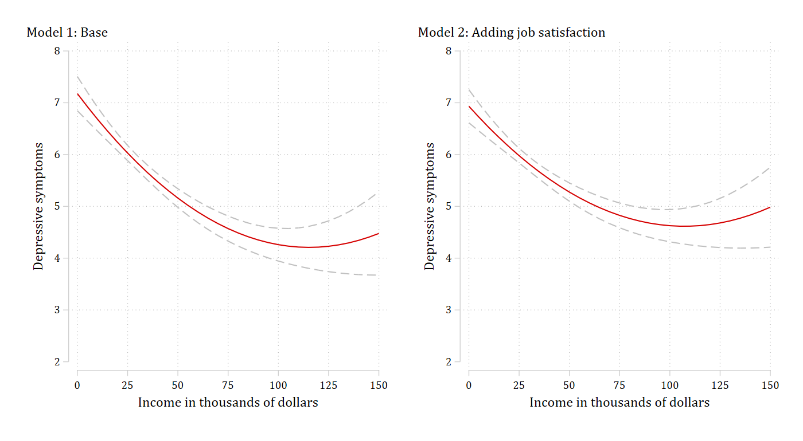
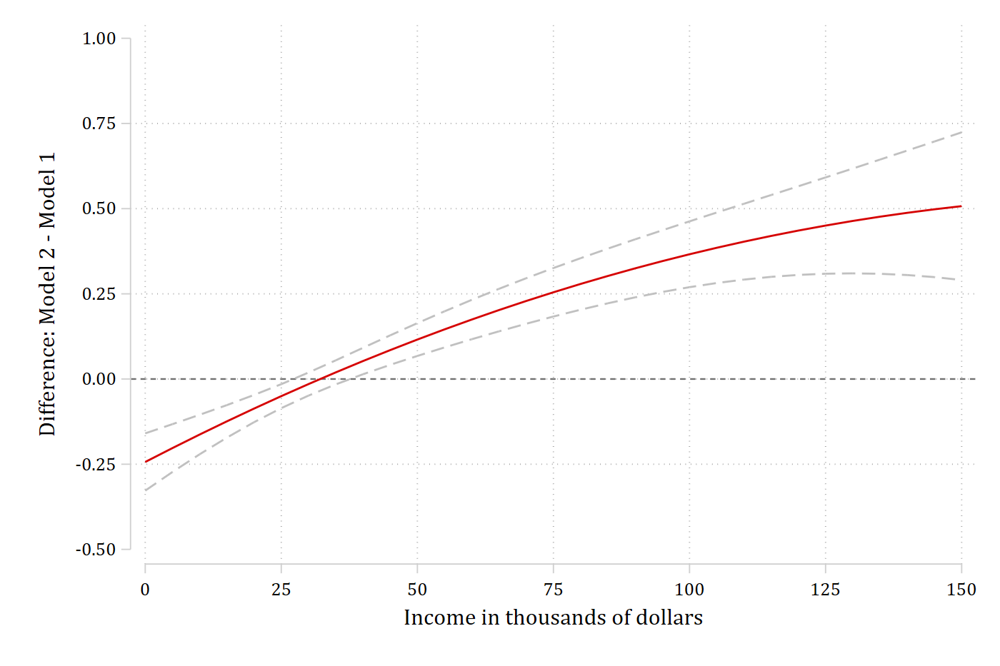
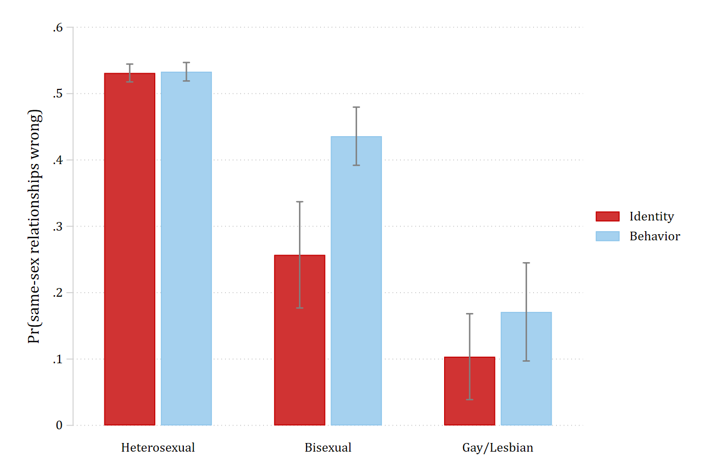
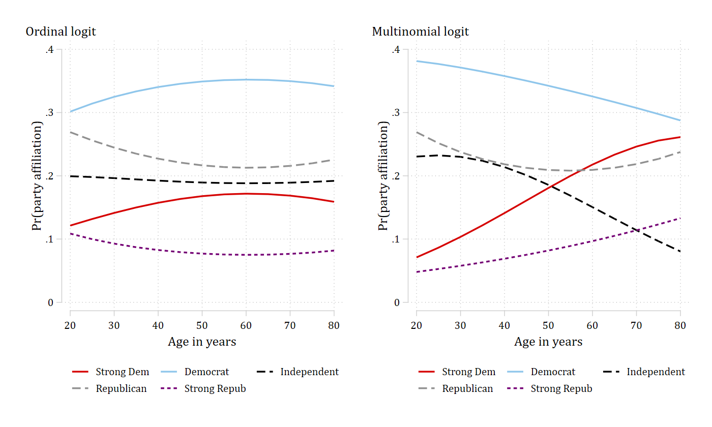

Predictions and graphs
margins, marginsplot, and coefplot after suest2 – Figures 3 to 6 of Mize, Doan, and Long (2019)
After suest2 the combined system is the active set of estimates, and margins can be pointed at any one of its models with predict(model(name)). That means everything margins produces for a single model – predictions over a range of a variable, predicted probabilities for each category of an outcome, differences between predictions – can be produced for each model of the system, with standard errors that use the joint covariance matrix. And anything margins produces, marginsplot and coefplot can graph.
This page remakes four figures from Mize, Doan, and Long (2019). The article fit its models jointly with gsem (or with Stata’s suest) and built the tables with mlincom. Here each model is fit and stored on its own, combined with suest2, and then graphed with the same margins and marginsplot calls a single model would use. The article’s replication files are at trentonmize.com/software/mecompare; the marginal-effect tables from the same examples are on the mecompare example pages. coefplot (Jann) is used for one figure; install it once with ssc install coefplot.
Predictions from each model (Figure 3)
Example 6.1 of the article regresses a depressive-symptoms scale on income and income squared, then adds job satisfaction as a possible mediator. Fit and store the two models, then combine them:
use "https://tdmize.github.io/data/data/ah4_cme", clear(ah4_cme.dta | Add Health Wave 4 | 2018-07-10)drop if missing(depsympB, income, inc10, age, woman, race, college, jobsat)(0 observations deleted)
. quietly regress depsympB c.income##c.income c.age i.woman i.race, vce(robust)
estimates store basemod. quietly regress depsympB c.income##c.income c.age i.woman i.race i.jobsat, vce(robust)
estimates store medmod. suest2 basemod medmodSimultaneous results for basemod, medmod Number of obs = 4,307
---------------------------------------------------------------------------------------------------
| Robust
| Coefficient std. err. z P>|z| [95% conf. interval]
----------------------------------+----------------------------------------------------------------
basemod_mean |
income | -0.051 0.006 -7.947 0.000 -0.064 -0.039
|
c.income#c.income | 0.000 0.000 4.639 0.000 0.000 0.000
|
age | 0.048 0.039 1.236 0.217 -0.028 0.124
|
woman |
Woman | 0.622 0.139 4.467 0.000 0.349 0.894
|
race |
Black or African American | 0.502 0.169 2.976 0.003 0.171 0.832
American Indian or Alaska Native | 0.339 0.689 0.491 0.623 -1.013 1.690
Asian or Pacific Islander | 1.001 0.389 2.575 0.010 0.239 1.763
|
_cons | 5.337 1.102 4.844 0.000 3.177 7.496
----------------------------------+----------------------------------------------------------------
basemod_lnvar |
_cons | 2.993 0.030 101.384 0.000 2.935 3.051
----------------------------------+----------------------------------------------------------------
medmod_mean |
income | -0.043 0.006 -6.886 0.000 -0.055 -0.031
|
c.income#c.income | 0.000 0.000 4.357 0.000 0.000 0.000
|
age | 0.054 0.037 1.450 0.147 -0.019 0.128
|
woman |
Woman | 0.714 0.135 5.281 0.000 0.449 0.979
|
race |
Black or African American | 0.270 0.167 1.619 0.106 -0.057 0.598
American Indian or Alaska Native | 0.469 0.707 0.664 0.507 -0.916 1.854
Asian or Pacific Islander | 0.810 0.372 2.176 0.030 0.080 1.540
|
jobsat |
Satisfied | 1.250 0.149 8.408 0.000 0.959 1.541
Neither satisfied nor dissatis.. | 2.378 0.216 11.014 0.000 1.955 2.801
Dissatisfied | 3.350 0.333 10.047 0.000 2.697 4.004
Extremely dissatisfied | 4.830 0.676 7.144 0.000 3.505 6.156
|
_cons | 3.564 1.079 3.304 0.001 1.450 5.678
----------------------------------+----------------------------------------------------------------
medmod_lnvar |
_cons | 2.936 0.029 100.965 0.000 2.879 2.993
---------------------------------------------------------------------------------------------------predict(model(basemod)) asks margins for predictions from the base model only. With at(income=(0(5)150)) and atmeans, that is the predicted number of depressive symptoms across the range of income, holding the other variables at their means – the left panel of the article’s Figure 3. marginsplot graphs it exactly as it would after regress:
margins, predict(model(basemod)) at(income=(0(5)150)) atmeans noatlegendAdjusted predictions Number of obs = 4,307
Model VCE: Robust
Expression: Linear prediction, predict(model(basemod))
------------------------------------------------------------------------------
| Delta-method
| Margin std. err. z P>|z| [95% conf. interval]
-------------+----------------------------------------------------------------
_at |
1 | 7.176 0.169 42.569 0.000 6.846 7.507
2 | 6.924 0.142 48.923 0.000 6.647 7.202
3 | 6.684 0.118 56.649 0.000 6.453 6.915
4 | 6.454 0.099 65.524 0.000 6.261 6.647
5 | 6.236 0.084 74.368 0.000 6.072 6.400
6 | 6.029 0.075 80.609 0.000 5.882 6.175
7 | 5.833 0.072 81.575 0.000 5.693 5.973
8 | 5.648 0.073 77.254 0.000 5.505 5.791
9 | 5.474 0.078 70.191 0.000 5.321 5.627
10 | 5.312 0.085 62.808 0.000 5.146 5.477
11 | 5.160 0.092 56.254 0.000 4.981 5.340
12 | 5.020 0.099 50.797 0.000 4.826 5.214
13 | 4.891 0.106 46.343 0.000 4.684 5.098
14 | 4.773 0.112 42.698 0.000 4.554 4.992
15 | 4.667 0.118 39.666 0.000 4.436 4.897
16 | 4.571 0.123 37.069 0.000 4.329 4.813
17 | 4.487 0.129 34.759 0.000 4.234 4.740
18 | 4.413 0.135 32.615 0.000 4.148 4.679
19 | 4.351 0.142 30.543 0.000 4.072 4.631
20 | 4.300 0.151 28.486 0.000 4.005 4.596
21 | 4.261 0.161 26.423 0.000 3.945 4.577
22 | 4.232 0.174 24.364 0.000 3.892 4.573
23 | 4.215 0.189 22.343 0.000 3.845 4.584
24 | 4.208 0.206 20.403 0.000 3.804 4.613
25 | 4.213 0.227 18.583 0.000 3.769 4.658
26 | 4.229 0.250 16.911 0.000 3.739 4.720
27 | 4.257 0.276 15.400 0.000 3.715 4.798
28 | 4.295 0.306 14.054 0.000 3.696 4.894
29 | 4.345 0.338 12.866 0.000 3.683 5.006
30 | 4.405 0.373 11.824 0.000 3.675 5.136
31 | 4.477 0.410 10.913 0.000 3.673 5.281
------------------------------------------------------------------------------
. marginsplot, plotopts(msym(i)) recastci(rline) ciopts(lpat(dash) color(gs12)) ///
xlab(0(25)150) xtitle("Income in thousands of dollars") ///
ylab(2(1)8) ytitle("Depressive symptoms") ///
title("Model 1: Base", pos(11)) name(g_base, replace)Variables that uniquely identify margins: incomeThe same call with predict(model(medmod)) gives the right panel, and graph combine puts the two side by side:
quietly margins, predict(model(medmod)) at(income=(0(5)150)) atmeans noatlegend. marginsplot, plotopts(msym(i)) recastci(rline) ciopts(lpat(dash) color(gs12)) ///
xlab(0(25)150) xtitle("Income in thousands of dollars") ///
ylab(2(1)8) ytitle("Depressive symptoms") ///
title("Model 2: Adding job satisfaction", pos(11)) name(g_med, replace)Variables that uniquely identify margins: income
. graph combine g_base g_med, ycommon xsize(10) ysize(5.5) iscale(*1.2)
graph export "fig/plotting-predictions.png", replace width(1400)file fig/plotting-predictions.png saved as PNG format
The difference in predictions across models (Figure 4)
The article’s Figure 4 plots the difference between the two curves – model 2 minus model 1 – with a confidence interval at each value of income. With suest2 this is one margins call: expression() can contain more than one predict(), and each can name its model. The delta-method standard errors use the cross-model covariances, so the confidence interval is the correct one for a difference between two models fit to the same observations.
margins, at(income=(0(5)150)) atmeans noatlegend ///
expression(predict(model(medmod)) - predict(model(basemod)))Adjusted predictions Number of obs = 4,307
Model VCE: Robust
Expression: predict(model(medmod)) - predict(model(basemod))
------------------------------------------------------------------------------
| Delta-method
| Margin std. err. z P>|z| [95% conf. interval]
-------------+----------------------------------------------------------------
_at |
1 | -0.244 0.043 -5.677 0.000 -0.328 -0.159
2 | -0.203 0.036 -5.658 0.000 -0.273 -0.132
3 | -0.163 0.030 -5.507 0.000 -0.221 -0.105
4 | -0.124 0.024 -5.102 0.000 -0.172 -0.077
5 | -0.087 0.020 -4.254 0.000 -0.127 -0.047
6 | -0.050 0.018 -2.797 0.005 -0.085 -0.015
7 | -0.015 0.017 -0.859 0.390 -0.049 0.019
8 | 0.019 0.018 1.082 0.279 -0.016 0.055
9 | 0.053 0.020 2.664 0.008 0.014 0.091
10 | 0.085 0.022 3.844 0.000 0.042 0.128
11 | 0.116 0.025 4.720 0.000 0.068 0.164
12 | 0.146 0.027 5.391 0.000 0.093 0.199
13 | 0.175 0.029 5.925 0.000 0.117 0.232
14 | 0.202 0.032 6.361 0.000 0.140 0.265
15 | 0.229 0.034 6.720 0.000 0.162 0.296
16 | 0.255 0.036 7.011 0.000 0.183 0.326
17 | 0.279 0.039 7.237 0.000 0.204 0.355
18 | 0.302 0.041 7.394 0.000 0.222 0.383
19 | 0.325 0.043 7.481 0.000 0.240 0.410
20 | 0.346 0.046 7.494 0.000 0.256 0.437
21 | 0.366 0.049 7.432 0.000 0.270 0.463
22 | 0.385 0.053 7.299 0.000 0.282 0.489
23 | 0.403 0.057 7.103 0.000 0.292 0.514
24 | 0.420 0.061 6.854 0.000 0.300 0.540
25 | 0.436 0.066 6.564 0.000 0.306 0.566
26 | 0.450 0.072 6.246 0.000 0.309 0.592
27 | 0.464 0.078 5.913 0.000 0.310 0.618
28 | 0.476 0.085 5.573 0.000 0.309 0.644
29 | 0.488 0.093 5.235 0.000 0.305 0.670
30 | 0.498 0.102 4.906 0.000 0.299 0.697
31 | 0.507 0.111 4.589 0.000 0.291 0.724
------------------------------------------------------------------------------
. marginsplot, plotopts(msym(i)) recastci(rline) ciopts(lpat(dash) color(gs12)) ///
yline(0) xlab(0(25)150) xtitle("Income in thousands of dollars") ///
ylab(-0.5(.25)1, format(%3.2f)) ytitle("Difference: Model 2 - Model 1") ///
title("")Variables that uniquely identify margins: incomegraph export "fig/plotting-difference.png", replace width(1400)file fig/plotting-difference.png saved as PNG format
Above roughly $50,000 model 2 predicts more depressive symptoms than model 1, and the interval excludes zero – accounting for job satisfaction changes what the model says about people with higher incomes.
Checking the numbers. A bare margins after suest2 evaluates every model of the system, one _predict per model in the order they were given to suest2, so with four values of income the first four rows below are the base model and rows 5 to 8 are the mediation model. After post, metest can take any difference between rows. The differences at income 0 and 100 match rows 1 and 21 of the expression() table above:
margins, at(income=(0 50 100 150)) atmeans postAdjusted predictions Number of obs = 4,307
Model VCE: Robust
1._predict: Linear prediction, predict(model(basemod))
2._predict: Linear prediction, predict(model(medmod))
1._at: income = 0
age = 28.41653 (mean)
0.woman = .4525192 (mean)
1.woman = .5474808 (mean)
1.race = .7452984 (mean)
2.race = .2189459 (mean)
3.race = .0058045 (mean)
4.race = .0299512 (mean)
1.jobsat = .2437892 (mean)
2.jobsat = .4989552 (mean)
3.jobsat = .1715811 (mean)
4.jobsat = .0643139 (mean)
5.jobsat = .0213606 (mean)
2._at: income = 50
age = 28.41653 (mean)
0.woman = .4525192 (mean)
1.woman = .5474808 (mean)
1.race = .7452984 (mean)
2.race = .2189459 (mean)
3.race = .0058045 (mean)
4.race = .0299512 (mean)
1.jobsat = .2437892 (mean)
2.jobsat = .4989552 (mean)
3.jobsat = .1715811 (mean)
4.jobsat = .0643139 (mean)
5.jobsat = .0213606 (mean)
3._at: income = 100
age = 28.41653 (mean)
0.woman = .4525192 (mean)
1.woman = .5474808 (mean)
1.race = .7452984 (mean)
2.race = .2189459 (mean)
3.race = .0058045 (mean)
4.race = .0299512 (mean)
1.jobsat = .2437892 (mean)
2.jobsat = .4989552 (mean)
3.jobsat = .1715811 (mean)
4.jobsat = .0643139 (mean)
5.jobsat = .0213606 (mean)
4._at: income = 150
age = 28.41653 (mean)
0.woman = .4525192 (mean)
1.woman = .5474808 (mean)
1.race = .7452984 (mean)
2.race = .2189459 (mean)
3.race = .0058045 (mean)
4.race = .0299512 (mean)
1.jobsat = .2437892 (mean)
2.jobsat = .4989552 (mean)
3.jobsat = .1715811 (mean)
4.jobsat = .0643139 (mean)
5.jobsat = .0213606 (mean)
------------------------------------------------------------------------------
| Delta-method
| Margin std. err. z P>|z| [95% conf. interval]
-------------+----------------------------------------------------------------
_predict#_at |
1 1 | 7.176 0.169 42.569 0.000 6.846 7.507
1 2 | 5.160 0.092 56.254 0.000 4.981 5.340
1 3 | 4.261 0.161 26.423 0.000 3.945 4.577
1 4 | 4.477 0.410 10.913 0.000 3.673 5.281
2 1 | 6.933 0.163 42.574 0.000 6.614 7.252
2 2 | 5.276 0.090 58.559 0.000 5.100 5.453
2 3 | 4.627 0.159 29.154 0.000 4.316 4.938
2 4 | 4.985 0.394 12.658 0.000 4.213 5.756
------------------------------------------------------------------------------
. metest 5 - 1, rowname("Income 0: Model 2 - Model 1") | estimate se pvalue
---------------------------------+--------------------------------
Income 0 |
Model 2 - Model 1 | -0.244 0.043 0.000 metest 7 - 3, rowname("Income 100: Model 2 - Model 1") add | estimate se pvalue
---------------------------------+--------------------------------
Income 0 |
Model 2 - Model 1 | -0.244 0.043 0.000
---------------------------------+--------------------------------
Income 100 |
Model 2 - Model 1 | 0.366 0.049 0.000 Predicted probabilities from alternative predictors (Figure 5)
Example 6.3 predicts whether a person views same-sex relationships as wrong from sexual orientation measured two ways: by self-identification in one logit and by reported sexual behavior in the other. The article’s Figure 5 is a bar chart of the predicted probabilities for each orientation category from each model. Fit, store, and combine, and this time store the combined system too, because margins, post will replace it:
use "https://tdmize.github.io/data/data/gss_cme", clear(gss_cme.dta | GSS 1972 - 2016 Weighted | 2018-07-10)drop if missing(samesexB, sexident, sexbehav, college, woman, race, age, year)(57,545 observations deleted)
. quietly logit samesexB i.sexident i.woman i.college c.age i.race i.year, vce(robust)
estimates store identity. quietly logit samesexB i.sexbehav i.woman i.college c.age i.race i.year, vce(robust)
estimates store behavior. quietly suest2 identity behavior
estimates store systemEach model gets its own margins call: the identity model at the three values of sexident, the behavior model at the three values of sexbehav. For a logit the default prediction is the probability. Both sets of average predicted probabilities are posted and stored, which is the form coefplot reads:
margins, predict(model(identity)) at(sexident=(1 2 3)) postPredictive margins Number of obs = 4,921
Model VCE: Robust
Expression: Pr(samesexB), predict(model(identity))
1._at: sexident = 1
2._at: sexident = 2
3._at: sexident = 3
------------------------------------------------------------------------------
| Delta-method
| Margin std. err. z P>|z| [95% conf. interval]
-------------+----------------------------------------------------------------
_at |
1 | 0.531 0.007 77.364 0.000 0.518 0.545
2 | 0.257 0.041 6.291 0.000 0.177 0.337
3 | 0.104 0.033 3.136 0.002 0.039 0.168
------------------------------------------------------------------------------estimates store pr_identity. estimates restore system(results system are active now)margins, predict(model(behavior)) at(sexbehav=(1 2 3)) postPredictive margins Number of obs = 4,921
Model VCE: Robust
Expression: Pr(samesexB), predict(model(behavior))
1._at: sexbehav = 1
2._at: sexbehav = 2
3._at: sexbehav = 3
------------------------------------------------------------------------------
| Delta-method
| Margin std. err. z P>|z| [95% conf. interval]
-------------+----------------------------------------------------------------
_at |
1 | 0.533 0.007 75.067 0.000 0.519 0.547
2 | 0.436 0.022 19.487 0.000 0.392 0.480
3 | 0.171 0.038 4.534 0.000 0.097 0.245
------------------------------------------------------------------------------estimates store pr_behaviorThe two stored results have the same coefficient names (1._at, 2._at, 3._at), so coefplot lines them up category by category:
coefplot (pr_identity, color(red*1.3)) (pr_behavior, color(eltblue*.9)), ///
vertical recast(bar) barw(0.3) ciopts(recast(rcap) color(gs8)) citop ///
legend(order(1 "Identity" 3 "Behavior")) ///
xlab(1 "Heterosexual" 2 "Bisexual" 3 "Gay/Lesbian", noticks) ///
ylab(0(0.1).6) ytitle("Pr(same-sex relationships wrong)") ///
xscale(noline) plotregion(style(none))
graph export "fig/plotting-bars.png", replace width(1400)file fig/plotting-bars.png saved as PNG format
The article’s Table 4 (panel A) reports the same probabilities with a test of the cross-model difference in each category. One margins call on the restored system, with an at() for each measure, evaluates both models: rows 1 to 3 are the identity model at the three values of sexident, and rows 10 to 12 are the behavior model at the three values of sexbehav (rows 4 to 6 and 7 to 9 set the variable the model does not use, and are not needed). metest builds the table:
estimates restore system(results system are active now)margins, at(sexident=(1 2 3)) at(sexbehav=(1 2 3)) postPredictive margins Number of obs = 4,921
Model VCE: Robust
1._predict: Pr(samesexB), predict(model(identity))
2._predict: Pr(samesexB), predict(model(behavior))
1._at: sexident = 1
2._at: sexident = 2
3._at: sexident = 3
4._at: sexbehav = 1
5._at: sexbehav = 2
6._at: sexbehav = 3
------------------------------------------------------------------------------
| Delta-method
| Margin std. err. z P>|z| [95% conf. interval]
-------------+----------------------------------------------------------------
_predict#_at |
1 1 | 0.531 0.007 77.364 0.000 0.518 0.545
1 2 | 0.257 0.041 6.291 0.000 0.177 0.337
1 3 | 0.104 0.033 3.136 0.002 0.039 0.168
1 4 | 0.517 0.007 78.009 0.000 0.504 0.530
1 5 | 0.517 0.007 78.009 0.000 0.504 0.530
1 6 | 0.517 0.007 78.009 0.000 0.504 0.530
2 1 | 0.517 0.007 77.817 0.000 0.504 0.530
2 2 | 0.517 0.007 77.817 0.000 0.504 0.530
2 3 | 0.517 0.007 77.817 0.000 0.504 0.530
2 4 | 0.533 0.007 75.067 0.000 0.519 0.547
2 5 | 0.436 0.022 19.487 0.000 0.392 0.480
2 6 | 0.171 0.038 4.534 0.000 0.097 0.245
------------------------------------------------------------------------------
. metest, clear
quietly metest 1, rowname("Heterosexual: Identity") add
quietly metest 10, rowname("Heterosexual: Behavior") add
quietly metest 10 - 1, rowname("Heterosexual: Difference") add
quietly metest 2, rowname("Bisexual: Identity") add
quietly metest 11, rowname("Bisexual: Behavior") add
quietly metest 11 - 2, rowname("Bisexual: Difference") add
quietly metest 3, rowname("Gay/lesbian: Identity") add
quietly metest 12, rowname("Gay/lesbian: Behavior") add
quietly metest 12 - 3, rowname("Gay/lesbian: Difference") add
metest, title("Pr(wrong) by orientation: identity versus behavior")Pr(wrong) by orientation: identity versus behavior
| estimate se pvalue
---------------------------------+--------------------------------
Heterosexual |
Identity | 0.531 0.007 0.000
Behavior | 0.533 0.007 0.000
Difference | 0.002 0.002 0.319
---------------------------------+--------------------------------
Bisexual |
Identity | 0.257 0.041 0.000
Behavior | 0.436 0.022 0.000
Difference | 0.179 0.041 0.000
---------------------------------+--------------------------------
Gay/lesbian |
Identity | 0.104 0.033 0.002
Behavior | 0.171 0.038 0.000
Difference | 0.067 0.040 0.093 Only for people classified as bisexual do the two measures give a different answer. The marginal effects for this example – panel B of the article’s table – are on the alternative predictors page of mecompare.
Two model types for one outcome (Figure 6)
Example 6.5 fits an ordinal logit and a multinomial logit to the same five-category party identification, and the article’s Figure 6 compares the predicted probability of each category across age from the two models. For a multi-category model, predict() names the model and the outcome, so predictions for all five categories take five predict() options – the same as they would after ologit or mlogit alone. partyid5 is coded 0 to 4, from strong Democrat to strong Republican:
use "https://tdmize.github.io/data/data/gss_cme", clear(gss_cme.dta | GSS 1972 - 2016 Weighted | 2018-07-10)drop if year < 2010(53,043 observations deleted)drop if missing(partyid5, woman, edyrs, age, parent, married, faminc, employed, region4, year)(1,244 observations deleted)
. quietly ologit partyid5 c.age##c.age i.woman c.edyrs i.parent i.married i.race ///
c.faminc i.employed i.region4 i.year, vce(robust)
estimates store ordinal. quietly mlogit partyid5 c.age##c.age i.woman c.edyrs i.parent i.married i.race ///
c.faminc i.employed i.region4 i.year, vce(robust)
estimates store nominal. quietly suest2 ordinal nominal. margins, at(age=(20 50 80)) atmeans ///
predict(model(ordinal) pr outcome(0)) predict(model(ordinal) pr outcome(1)) ///
predict(model(ordinal) pr outcome(2)) predict(model(ordinal) pr outcome(3)) ///
predict(model(ordinal) pr outcome(4))Adjusted predictions Number of obs = 8,179
Model VCE: Robust
1._predict: Pr(partyid5==0), predict(model(ordinal) pr outcome(0))
2._predict: Pr(partyid5==1), predict(model(ordinal) pr outcome(1))
3._predict: Pr(partyid5==2), predict(model(ordinal) pr outcome(2))
4._predict: Pr(partyid5==3), predict(model(ordinal) pr outcome(3))
5._predict: Pr(partyid5==4), predict(model(ordinal) pr outcome(4))
1._at: age = 20
0.woman = .4485878 (mean)
1.woman = .5514122 (mean)
edyrs = 13.69507 (mean)
0.parent = .2738721 (mean)
1.parent = .7261279 (mean)
0.married = .5550801 (mean)
1.married = .4449199 (mean)
1.race = .7469128 (mean)
2.race = .1585768 (mean)
3.race = .0945103 (mean)
faminc = 32.91243 (mean)
0.employed = .4013938 (mean)
1.employed = .5986062 (mean)
1.region4 = .1656682 (mean)
2.region4 = .236826 (mean)
3.region4 = .3705832 (mean)
4.region4 = .2269226 (mean)
2010.year = .2143294 (mean)
2012.year = .207238 (mean)
2014.year = .2732608 (mean)
2016.year = .3051718 (mean)
2._at: age = 50
0.woman = .4485878 (mean)
1.woman = .5514122 (mean)
edyrs = 13.69507 (mean)
0.parent = .2738721 (mean)
1.parent = .7261279 (mean)
0.married = .5550801 (mean)
1.married = .4449199 (mean)
1.race = .7469128 (mean)
2.race = .1585768 (mean)
3.race = .0945103 (mean)
faminc = 32.91243 (mean)
0.employed = .4013938 (mean)
1.employed = .5986062 (mean)
1.region4 = .1656682 (mean)
2.region4 = .236826 (mean)
3.region4 = .3705832 (mean)
4.region4 = .2269226 (mean)
2010.year = .2143294 (mean)
2012.year = .207238 (mean)
2014.year = .2732608 (mean)
2016.year = .3051718 (mean)
3._at: age = 80
0.woman = .4485878 (mean)
1.woman = .5514122 (mean)
edyrs = 13.69507 (mean)
0.parent = .2738721 (mean)
1.parent = .7261279 (mean)
0.married = .5550801 (mean)
1.married = .4449199 (mean)
1.race = .7469128 (mean)
2.race = .1585768 (mean)
3.race = .0945103 (mean)
faminc = 32.91243 (mean)
0.employed = .4013938 (mean)
1.employed = .5986062 (mean)
1.region4 = .1656682 (mean)
2.region4 = .236826 (mean)
3.region4 = .3705832 (mean)
4.region4 = .2269226 (mean)
2010.year = .2143294 (mean)
2012.year = .207238 (mean)
2014.year = .2732608 (mean)
2016.year = .3051718 (mean)
------------------------------------------------------------------------------
| Delta-method
| Margin std. err. z P>|z| [95% conf. interval]
-------------+----------------------------------------------------------------
_predict#_at |
1 1 | 0.121 0.006 18.804 0.000 0.109 0.134
1 2 | 0.168 0.005 32.171 0.000 0.158 0.178
1 3 | 0.159 0.011 14.810 0.000 0.138 0.180
2 1 | 0.302 0.009 34.176 0.000 0.284 0.319
2 2 | 0.349 0.006 56.391 0.000 0.337 0.361
2 3 | 0.342 0.010 33.840 0.000 0.322 0.362
3 1 | 0.199 0.005 42.275 0.000 0.190 0.209
3 2 | 0.189 0.005 41.224 0.000 0.180 0.198
3 3 | 0.192 0.005 36.155 0.000 0.182 0.202
4 1 | 0.269 0.009 30.051 0.000 0.252 0.287
4 2 | 0.217 0.005 40.173 0.000 0.206 0.227
4 3 | 0.225 0.011 20.324 0.000 0.204 0.247
5 1 | 0.109 0.006 18.229 0.000 0.097 0.120
5 2 | 0.077 0.003 24.123 0.000 0.071 0.083
5 3 | 0.082 0.006 13.170 0.000 0.070 0.094
------------------------------------------------------------------------------The five predictions at each age sum to one, as they should. For the figure, the same call over age=(20(5)80) for each model, graphed without confidence intervals as in the article:
quietly margins, at(age=(20(5)80)) atmeans ///
predict(model(ordinal) pr outcome(0)) predict(model(ordinal) pr outcome(1)) ///
predict(model(ordinal) pr outcome(2)) predict(model(ordinal) pr outcome(3)) ///
predict(model(ordinal) pr outcome(4)). marginsplot, noci plotopts(msym(i) lwidth(medthick)) ///
legend(order(1 "Strong Dem" 2 "Democrat" 3 "Independent" ///
4 "Republican" 5 "Strong Repub") position(6) rows(2)) ///
xlab(20(10)80) xtitle("Age in years") ylab(0(.1).4) ///
ytitle("Pr(party affiliation)") title("Ordinal logit", pos(11)) ///
name(g_ordinal, replace)Variables that uniquely identify margins: age _equation
. quietly margins, at(age=(20(5)80)) atmeans ///
predict(model(nominal) pr outcome(0)) predict(model(nominal) pr outcome(1)) ///
predict(model(nominal) pr outcome(2)) predict(model(nominal) pr outcome(3)) ///
predict(model(nominal) pr outcome(4)). marginsplot, noci plotopts(msym(i) lwidth(medthick)) ///
legend(order(1 "Strong Dem" 2 "Democrat" 3 "Independent" ///
4 "Republican" 5 "Strong Repub") position(6) rows(2)) ///
xlab(20(10)80) xtitle("Age in years") ylab(0(.1).4) ///
ytitle("Pr(party affiliation)") title("Multinomial logit", pos(11)) ///
name(g_nominal, replace)Variables that uniquely identify margins: age _equation
. graph combine g_ordinal g_nominal, ycommon xsize(10) ysize(6) iscale(*1.2)
graph export "fig/plotting-party.png", replace width(1400)(file fig/plotting-party.png not found)
file fig/plotting-party.png saved as PNG format
The ordinal model forces one pattern on every category – the probability of being an independent barely moves with age – while the multinomial model lets it fall steeply. The tests of whether these age effects differ across the two models are on the model types page of mecompare.
Reference
Mize, Trenton D., Long Doan, and J. Scott Long. 2019. “A General Framework for Comparing Predictions and Marginal Effects Across Models.” Sociological Methodology 49(1): 152–189. https://doi.org/10.1177/0081175019852763